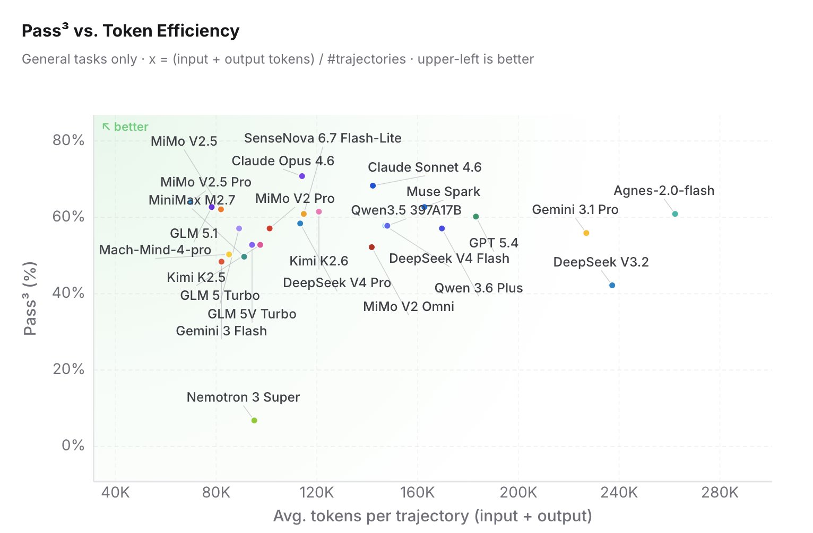

2. 文章在反对什么旧评测范式
作者的出发点是：2026 年 Agent 已经从 demo 进入生产，主流范式变成 Agent = Model + Harness。这里的 harness 指工具、系统提示、浏览器、shell、代码解释器、检索、文件系统、执行环境、验证器等外部支架。模型不再是孤立地回答一道题，而是在一个可操作环境里完成任务。
这会让很多传统 benchmark 的意义发生变化。
如果 web search 是标准工具，那么“记住 Q1 2026 营收”不再是核心能力。更关键的是模型是否知道这类问题必须联网、是否能交叉核验、是否能标注时间和来源。
很多概率、组合、状态跟踪题可以用几行 Python 更稳定地解决。此时高分可能测到的不是脑内推理深度，而是模型是否知道“该写代码”。
作者没有否定 base capability eval。对小模型、垂直模型、基础能力还没补齐的场景，传统 eval 仍然是 gap finding 工具。争议只在 frontier agent 的主战场应该迁移。
我对这篇文章的理解是：它把“能力”从静态参数里的知识和推理，重新定义成一种动态决策策略：知道什么时候自己做，什么时候借外力，什么时候验证，什么时候停。
3. 机制拆解：Delegation Intelligence 到底是什么
Delegation Intelligence 可以翻译成“委派智能”或“代理式委派能力”。它不是说模型一定要调用更多工具，而是说模型要能在不同路径之间做正确选择。
| 维度 | 具体含义 | 好行为 | 坏行为 |
|---|---|---|---|
| Tool-use judgment | 什么时候用工具、用哪个工具、参数怎么设。 | 实时财报问题主动搜索；概率模拟主动写代码；高风险操作先 dry-run。 | 能心算就硬心算；需要当前信息却凭记忆答；工具参数乱猜。 |
| Information synthesis & verification | 多来源整合、可靠性加权、冲突处理。 | RCT 权重高于博客；旧综述标注时效边界；关键数字找两个来源。 | 把所有来源平均；把低质量摘要当事实；不说明不确定性。 |
| Path selection | 在直接推理、代码、检索、阅读、验证、人审之间选择路径。 | 先定位核心文件再改代码；先看 README/测试再下判断；任务完成后运行验证。 | 无计划地扩搜；过早下结论；为简单问题启动昂贵流程。 |
4. 为什么 Pass-all-k / Pass^k 比 Pass@k 更重要
这条 X 的回复里，xeophon 提到作者的 pass-all-k 与 τ-bench 语境里的 pass^k 基本指向同一类可靠性指标。这个点很关键，因为它正好解释 Agent 评测为什么不能只看“多试几次总能成功”。
给模型 k 次独立尝试，只要其中一次成功就算通过。代码生成里常用，因为用户或评测器可以从多个候选里挑一个正确答案。
关注 k 次尝试是否全部成功。它更接近生产环境：用户不会因为系统三次里有一次成功就满意，用户关心连续请求是否稳定完成。
一个小例子
假设某客服 Agent 单次任务成功率是 70%。如果给它 3 次机会，Pass@3 可能看起来接近 97%，因为至少一次成功很容易。但如果要求连续 3 次都成功，Pass^3 = 0.7^3 = 34.3%。这就是为什么 Pass@k 会掩盖可靠性问题。
Claw-Eval 的指标组合
Claw-Eval 页面把 Pass^3、Pass@3、Completion、Robustness、Safety 和 Avg Score 放在一起。这个设计体现了文章主张：只看最终答案不够，还要看重复运行稳定性、鲁棒性和安全边界。

5. “Model Instinct” 是这篇文章最有意思但也最难测的部分
作者观察到不同模型有不同“直觉”：有些模型还没完整读论文，就能定位关键 method 段；还没深入代码库，就能猜到核心文件；信息还不充分时，第一判断就接近最终答案。这种能力不是最终准确率，也不完全等于 token efficiency。
我觉得这个概念有价值，因为它描述的是“搜索策略的先验质量”。强模型不只是会穷举路径，而是更早把注意力放到高信息密度的位置。
| 可测 proxy | 测什么 | 潜在混淆 |
|---|---|---|
| Time-to-first-relevant-artifact | 多久找到真正关键的文件、段落、网页或日志。 | 可能受工具速度、索引质量、先验泄漏影响。 |
| Early-path regret | 前几步选择与最终最短成功路径的偏离程度。 | “最短路径”未必是最安全路径。 |
| Unnecessary-tool rate | 调用了多少对最终答案没有贡献的工具。 | 探索性任务中冗余调用不一定是坏事。 |
| Source-weight calibration | 是否能早期区分高质量来源和噪声来源。 | 需要人工或强验证器标注来源质量。 |
6. 作者强调的工程挑战，其实是 Agent Eval 的可信度底座
文章最后一部分很工程化，但重要性不低于指标本身。Agent eval 比 QA eval 更容易被环境污染。
- 模型服务超时、限流、上下文截断会污染结果。
- 浏览器、shell、容器、文件系统状态漂移会被误归因成模型失败。
- Docker CPU、内存、磁盘不足会让任务互相影响；隔离不仅是文件隔离，也是资源隔离。
- 同一模型换 prompt、工具集、harness 后可能差很多；跨模型比较必须考虑 harness mismatch。
- Web search/mock service 会随时间漂移；需要 snapshot 或避免强时效依赖。
- 安全应作为 veto 维度：越权删文件、泄漏信息、乱发请求，不能用任务成功抵消。
这里最值得带走的工程原则是：Agent eval 的样本不是“题目 + 答案”，而是“题目 + 环境 + harness + 工具状态 + 执行轨迹 + 最终状态”。缺任何一项，复现性和可解释性都会下降。
7. 我的核心 insight
这篇文章的重要性，在于它把 Agent 能力从“是否拥有某项内生技能”推进到“是否拥有正确的外包策略”。这是一个更接近真实生产的能力定义。
不是因为知识、推理、数学不重要，而是因为在 Agent 系统里，这些能力经常被工具重构。评测如果仍然禁止工具，就测不到真实工作流；如果允许工具却不记录路径，又分不清模型能力和 harness 偶然性。
Pass@k 奖励“多试几次总会成功”，Pass^k 追问“连续处理真实请求是否稳定”。生产系统真正要的是后者。
Delegation Intelligence 容易被 harness 设计劫持。一个模型在某个工具环境里很强，不代表它具备可迁移的委派能力。因此多 harness 方差、路径审计和安全 veto 是必要配套。
我会把这篇文章看作一个评测方向的宣言：下一代 Agent benchmark 不应该只问“模型答对了吗”，而应该问“它为什么选择这条路径、这条路径是否稳定、成本是否合理、是否遵守边界、换一个 harness 是否仍然成立”。
证据边界与资料索引
原帖 https://x.com/_TobiasLee/status/2056339539866886649 本身只有一个短链，实际内容是 X Article Measuring the Delegation Intelligence of Agents。原帖与回复可公开读取；该 X Article 在平台上不稳定，正文以可访问的文章内容为准。